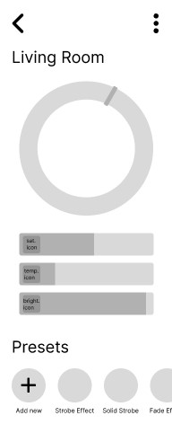
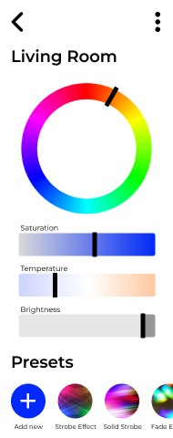

As a part of a UX project for a class at UVU, I redesigned the Feit Electric mobile app. This app is a smart home app that allows users to control various connected devices such as lights, air conditioners, and heaters. Through the app, users can set timers for lights, adjust color temperature, select from presets, and create personalized scenes. However, the original app had several usability issues, including repetitive functions and unclear features that made it difficult to navigate. I only needed to redesign it for mobile since this app does not have a corresponding website. Since this was my first time working exclusively on a mobile app, it was a unique learning experience that required me to apply both basic design principles and mobile-specific guidelines. The project involved quite a bit of planning, more than I was used to, and while I collaborated with classmates on occasion, the majority of the work was done independently. The project timeline was limited to just a few weeks for the entire redesign.
The first step in the design process was creating mood boards. Since I was unfamiliar with smart home apps, I did some research by downloading and reviewing similar apps from competitors. Although it was difficult to explore some of these apps because I had no account and no devices to connect to the app, I was still able to identify some common design patterns. They all had a bottom navigation bar with icons for a home page, an automation page, a devices page, and a settings page. All these findings helped me outline the necessary elements that I needed to start sketching out my Feit Electric app redesign.
In the sketching phase, I worked with a few of my classmates to brainstorm ideas for improving the user interface. The biggest issue with the app was the unintuitive design for selecting light temperatures, colors, and presets. Together we were able to come up with some more intuitive alternatives, which included a color wheel for choosing the colors and sliders for adjusting saturation, brightness, and temperature. I did some sketches on my own as well, where I explored some different layout for some of the other pages for the app. Once I was satisfied with these sketches, I moved on to the wireframes.
For the wireframes, I redesigned eight important pages, including the login page, home page, automation page, scenes page, device settings page, and profile page. I had to make sure that all the technical specifications were met, such as maintaining button sizes of 44 pixels or larger, while also following the assignment requirements such as reaching the number of required pages. My focus was on creating a minimal, user-friendly design where the functions were easy to understand, and the pages flowed easily together – something the original app struggled with. After some minor revisions along the way, I finalized the wireframes and was able to move on to the surface comps.
 The surface comps phase involved exploring color and typography. After experiments with different color schemes, I ultimately chose a bright electric blue to give elements of the app a vibrant pop, in contrast to the current muted sky blue. I opted for a simple and clean font as well to avoid distractions and ensure readability. I also organized the various elements into cards, using a lighter blue background to create a subtle contrast with the white cards. Each device was paired with a corresponding icon, such as a couch for the living room light and a fridge for the kitchen light, to make it easier for users to visually identify their devices at a glance.
Overall, I am very pleased with the final result of the project! Redesigning a mobile app rather than a website was a new and challenging experience that involved a lot of learning and practice. Ensuring that the transition between all the pages and incorporating all the necessary functions into the app proved to be more difficult than I had anticipated, but it was a very valuable learning opportunity. I thoroughly enjoyed the process and gained a deeper understanding of mobile app design!